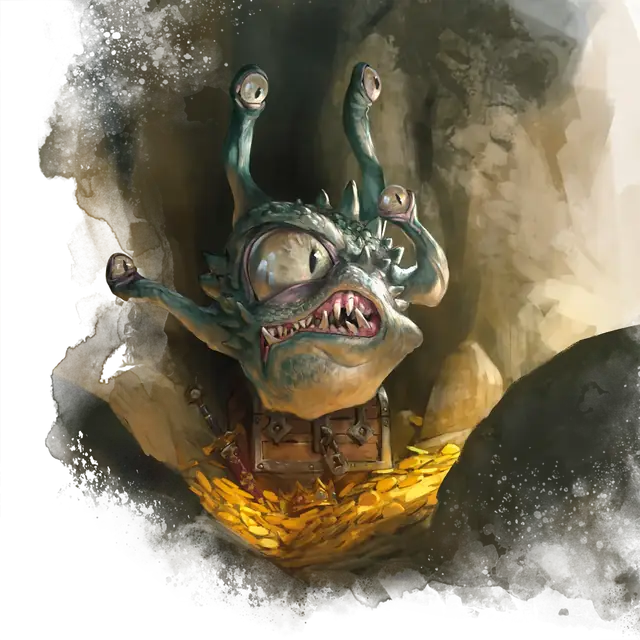

Наблюдатель
Spectator
Средняя Аберрация (Созерцатель), Принципиальная Нейтральная

Класс Защиты 14 Инициатива +2 (12)
Хиты 45 (7к8 + 14)
Скорость 5 футов, Полёта 30 футов (парит)
| мод | спас | ||
|---|---|---|---|
| СИЛ | 8 | −1 | −1 |
| ЛОВ | 14 | +2 | +2 |
| ТЕЛ | 14 | +2 | +2 |
| мод | спас | ||
|---|---|---|---|
| ИНТ | 13 | +1 | +1 |
| МДР | 14 | +2 | +2 |
| ХАР | 11 | +0 | +0 |
Иммунитеты Истощение, Опрокинутый
Чувства Тёмное зрение 120 футов, пассивное Восприятие 16
Языки Глубинная речь, Подземный, Телепатия 120 фт.
Опасность 3 (700 опыта; БВ +2)
Действия
Мультиатака. Наблюдатель дважды использует Лучи из глаз.
Укус. Бросок рукопашной атаки: +4, досягаемость 5 фт. Попадание: 5 (1к6 + 2) Колющего урона.
Лучи из глаз. Наблюдатель выстреливает одним из следующих магических лучей в видимую им в пределах 90 футов цель (бросьте 1к4; перебросьте, если наблюдатель уже использовал выпавший луч в этот ход):
1. Луч замешательства. Спасбросок Мудрости: Сл 12. Провал: 5 (2к4) Психического урона, и цель не может совершать Реакции до конца её следующего хода. В свой следующий ход цель не может перемещаться, и тратит действие на то, чтобы совершить рукопашную или дальнобойную атаку по случайному существу в пределах дистанции. Если цель не может атаковать, в этот ход она не делает ничего.
2. Луч паралича. Спасбросок Телосложения: Сл 12. Провал: Цель получает состояние Парализованный. Она повторяет спасбросок в конце каждого своего хода, при успехе оканчивая на себе этот эффект. Через 1 минуту она автоматически преуспевает.
3. Луч страха. Спасбросок Мудрости: Сл 12. Провал: 5 (2к4) Психического урона, и цель получает состояние Испуганный до конца своего следующего хода.
4. Луч ранений. Спасбросок Телосложения: Сл 12. Провал: 16 (3к10) Некротического урона. Успех: Только половина урона.
Реакции
Отражение заклинания. Условие: Наблюдатель совершает спасбросок против заклинания или бросок атаки заклинанием промахивается по нему. Эффект — Спасбросок Ловкости: Сл 12, одно видимое наблюдателем существо в пределах 120 футов. Провал: 10 (3к6) Силового урона.
Бонус мастерства +2
Среда обитания Подземье
Сокровища Любые
Наблюдатель
Скованный магией родственник бехолдера
С помощью мистического ритуала, проведённого над четырьмя глазными стебельками бехолдера, заклинатель может сформировать сновидения аберрации в похожего на бехолдера стража. Призванное в результате ритуала существо — наблюдатель — напоминает бехолдера с пятью магическими глазами: одним центральным и четырьмя на стебельках, расположенными на верхней части сферического тела.
Наблюдатель служит призывателю 101 год, как правило, занимаясь охраной сокровища или места, выбранных заклинателем. Только призыватель может получить доступ к тому, что охраняет этот надёжный страж. Наблюдатель способен общаться с другими существами, открыто обсуждать свои приказы и создавшего его мага, однако у него нет личных амбиций, и он ни за что не покинет свой пост. Если незваный гость проигнорирует предупреждения наблюдателя, тот попытается отогнать его с помощью своих магических лучей из глаз.
Отслужив положенный срок, эта аберрация может вновь раствориться в небытии или отправиться в путешествие, чтобы узнать больше о мультивселенной.